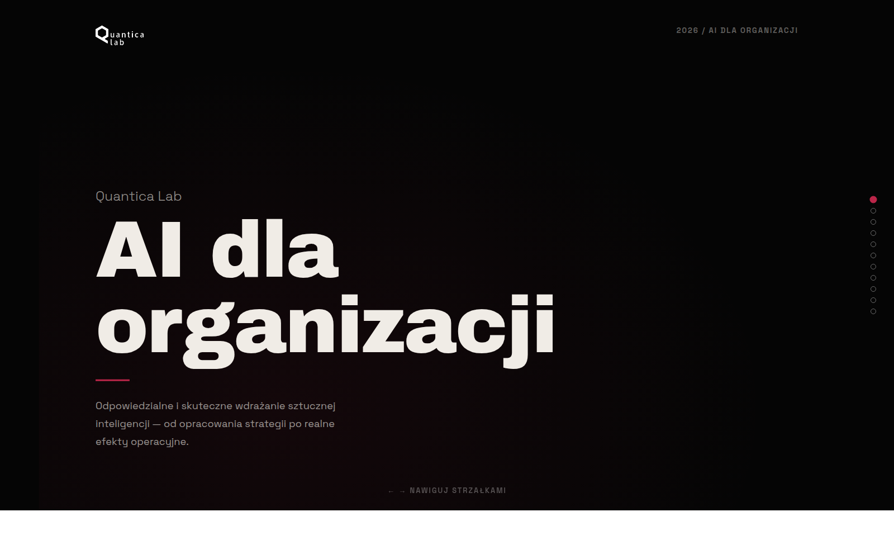
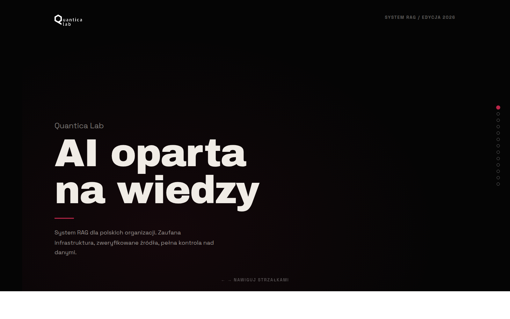
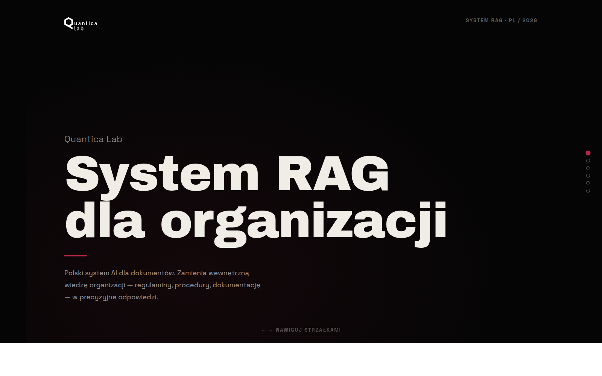
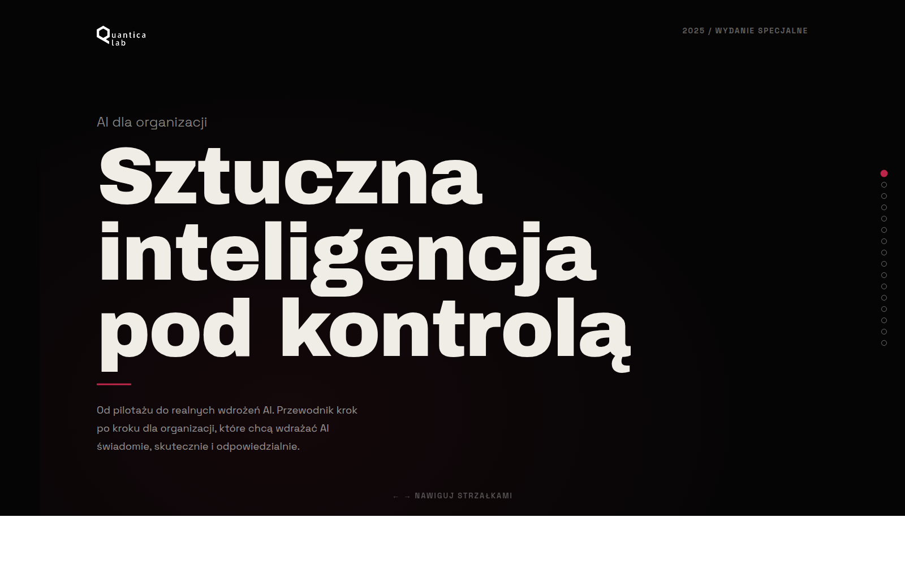
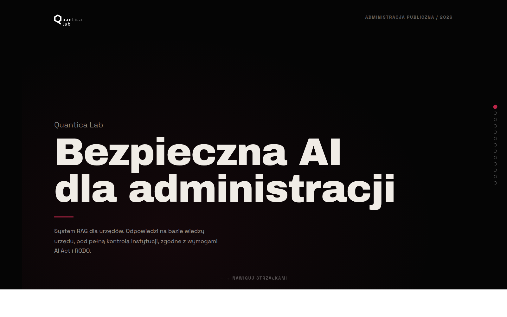
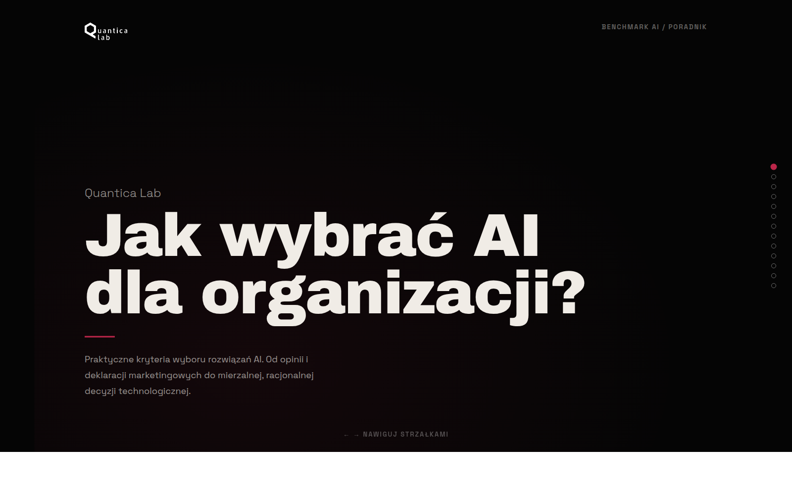
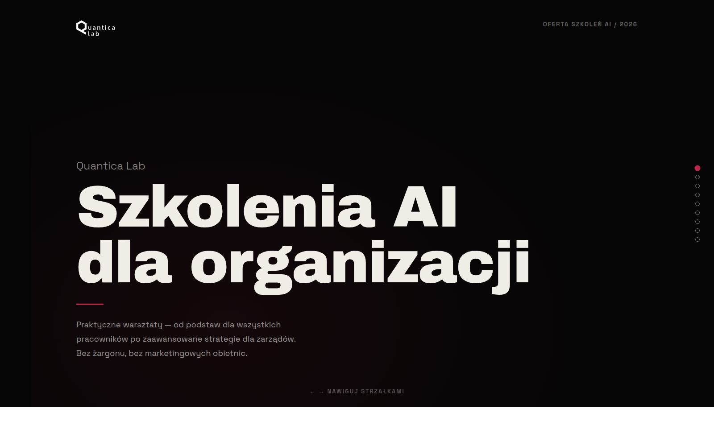

№ 01

Oferta · Flagowa publikacja
AI dla organizacji
Pełny przegląd oferty Quantica Lab — od rozwiązań RAG i agentów AI, przez adaptację modeli i architekturę danych, po strategię, kompetencje i wsparcie wdrożeniowe.

Zbiór materiałów redakcyjnych o odpowiedzialnym wdrażaniu sztucznej inteligencji — od oferty Quantica Lab, przez produkt RAG, po przewodniki wyboru modeli i katalog szkoleń.

Pełny przegląd oferty Quantica Lab — od rozwiązań RAG i agentów AI, przez adaptację modeli i architekturę danych, po strategię, kompetencje i wsparcie wdrożeniowe.

Podsumowanie dla kierownictwa. Cztery ryzyka ogólnodostępnej AI, suwerenność technologiczna i architektura RAG oparta na PLLuM oraz Intel Enterprise.

Kompaktowy brief produktowy. Jak działa system RAG Quantica Lab — od źródeł dokumentowych po precyzyjną odpowiedź, z pełną kontrolą danych.

Sztuczna inteligencja pod kontrolą. Od pilotażu do realnych wdrożeń AI — kompletny przewodnik krok po kroku dla organizacji, które chcą wdrażać AI świadomie, skutecznie i odpowiedzialnie.

RAG dla urzędów. Rosnąca liczba spraw, oczekiwania mieszkańców, AI Act i RODO — kompleksowe wdrożenie w administracji publicznej z zachowaniem suwerenności technologicznej.

Praktyczne kryteria oceny modeli AI. Od pięciu wymiarów oceny, przez proces wyboru, po adaptację modeli i racjonalną decyzję technologiczną.

Cztery ścieżki rozwoju kompetencji AI — od dwugodzinnego „Start z AI?" przez AI Literacy dla całej organizacji, po warsztaty strategiczne dla zarządów.